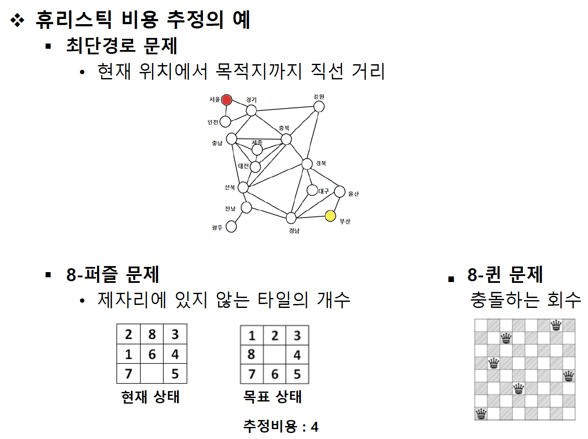

5th
정보이용 탐색 (informed search)
Heuristic search
시간이나 정보가 불충분하여 합리적인 판단을 할 수 없거나, 굳이 체계적이고 합리적인 판단을 할 필요가 없는 상황에서 신속하게 어림짐작하는 것

Hill climbing method (언덕오르기 방법)
현재 노드에서 heuristic에 의한 평가값이 가장 좋은 이웃 노드 하나를 확장해가는 탐색방법
local search 방식이라고 함 → local optimal solution에 빠질 가능성이 있음
greedy algorithm

best-first search (최상 우선 탐색)
확장 중인 노드들 중에서 목표 노드까지 남은 거리가 가장 짧은 노드를 확장하여 탐색
남은 거리를 정확히 알 수 없으므로 heuristic 사용

목표와 다른 타일의 개수
beam search (빔 탐색)
heuristic에 의한 평가값이 우수한 일정 개수의 확장 가능한 노드만을 메모리에 관리하면서 최상 우선 탐색을 적용

A* algorithm


game tree
상대가 있는 게임에서 자신과 상대방의 가능한 게임상태를 나타는 트리
tac-tac-toc, 바둑, 장기, 체스 등
게임의 결과는 마지막에 결정
많은 수(lookahead)를 볼 수록 유리

Mini-max algorithm
max 노드 - 자신에 해당하는 노드로 자기에게 유리한 최대값 선택
min 노드 - 상대방에 해당하는 노드로 최소값 선택